Résilience opérationnelle
Activités critiques, risques ICT, continuité, TPRM, prestataires critiques, tests de résilience et remédiations.
Explorer l’expertiseR’U SAFE accompagne les institutions financières, les organisations industrielles et leurs partenaires dans la maîtrise de leurs risques cyber, technologiques, opérationnels et liés à l’intelligence artificielle.
De la réglementation au contrôle continu, chaque axe relie les obligations aux opérations et aux décisions.
Activités critiques, risques ICT, continuité, TPRM, prestataires critiques, tests de résilience et remédiations.
Explorer l’expertiseGouvernance, contrôles cyber et technologiques, preuves, non-conformités, audits et plans d’action.
Explorer l’expertiseAI Act, ISO 42001, analyse des risques, supervision humaine, modèles tiers et contrôle continu.
Explorer l’expertiseCartographier, collecter les preuves, détecter les écarts et fournir une vision consolidée aux dirigeants.
Explorer l’expertiseR’U SAFE transforme les exigences en contrôles, les contrôles en preuves et les preuves en décisions.
R’U SAFE ne se limite pas à produire des diagnostics ou des recommandations. Nous accompagnons leur mise en œuvre, leur contrôle et leur pilotage jusqu’à l’obtention de résultats mesurables.
Évaluer votre dispositifDes expertises immédiatement mobilisables, sélectionnées et pilotées selon vos enjeux.
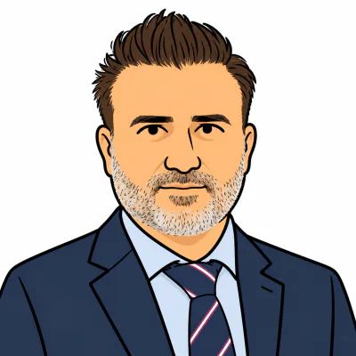
Directeur de projet
Avec plus de 27 ans d’expérience dans l’IT, dont plus de 15 ans dans la cybersécurité, Azad est un professionnel expérimenté ayant exercé les fonctions de CISO, CIO et responsable des risques technologiques, spécialisé dans la cyber-résilience, la gestion des risques technologiques, la conformité réglementaire et l’utilisation de l’IA appliquée à la gestion des risques.
Il a piloté des transformations majeures en matière de cybersécurité et de résilience au sein d’organisations internationales complexes, avec une expertise particulièrement forte autour de DORA, NIS2, ISO 27001, NIST, TPRM et de la résilience opérationnelle. Son expertise couvre notamment la conception et la mise en œuvre de frameworks de cyber-résilience, l’analyse des systèmes critiques et de leurs dépendances, les Business Impact Analyses, la gestion de crise, la continuité d’activité, la réponse aux incidents et l’amélioration continue.
Dans ses fonctions actuelles au sein d’un acteur majeur du secteur financier public, il pilote des initiatives combinant conformité DORA, gouvernance de la deuxième ligne de défense, sécurité des tiers et TPRM augmenté par l’IA, en exploitant l’intelligence artificielle pour renforcer l’analyse des risques et l’évaluation de la conformité des fournisseurs et prestataires.
Son parcours comprend également une expérience significative en tant que Global Chief Resilience Officer, durant laquelle il a conçu et déployé un framework de cyber-résilience, évalué les dépendances des systèmes et infrastructures critiques, aligné les dispositifs de réponse aux incidents et de continuité d’activité, et mis en place des programmes de tests et d’amélioration continue.
Azad possède par ailleurs une forte culture innovation et technologies émergentes, avec une expérience concrète de l’IA, du Deep Learning, de la RPA et de l’automatisation des processus. Il a notamment piloté des initiatives visant à automatiser les processus métiers et IT tout en maintenant un niveau élevé de sécurité et de maîtrise opérationnelle.
Au-delà de ses responsabilités exécutives, Azad intervient également comme enseignant auprès d’étudiants ingénieurs et MBA sur les thématiques de cyber-résilience et de gestion des risques, ainsi que sur des sujets tels que l’ISO 27005, EBIOS RM et les Data Centers.
Sa valeur ajoutée repose sur sa capacité à connecter cybersécurité, résilience, gestion des risques, exigences réglementaires et technologies émergentes, afin d’aider les organisations à rester sécurisées, résilientes, conformes et opérationnelles dans un environnement numérique de plus en plus complexe et fortement transformé par l’intelligence artificielle.

Directeur de projet
Gilles est un expert senior des secteurs bancaire et financier, spécialisé en cybersécurité, conformité réglementaire et résilience opérationnelle. Il bénéficie de plus de 20 ans d'expérience dans le secteur bancaire, acquise en France, aux États-Unis et en Asie du Sud-Est, dont 12 années au sein de HSBC dans des environnements de Commercial Banking et de Global Banking.
Depuis 2021, il s'est spécialisé dans les domaines de la cybersécurité, de la conformité réglementaire, de l'intelligence artificielle et de la résilience opérationnelle. Il associe ainsi une solide expérience opérationnelle du secteur bancaire à une compréhension approfondie des enjeux liés aux risques technologiques et réglementaires. Certifié DORA Lead Manager, Gilles intervient régulièrement lors de conférences internationales, notamment dans le cadre du Forum inCyber en France, au Luxembourg et au Maroc, sur les thématiques de la résilience opérationnelle, de la cybersécurité et de la conformité réglementaire appliquées au secteur financier et aux infrastructures critiques.
Gilles accorde une importance particulière à la dimension humaine de la résilience opérationnelle. Il considère que la formation, la sensibilisation et le développement d'une véritable culture de la résilience constituent des composantes essentielles d'un dispositif efficace, au même titre que la gouvernance, les technologies et la gestion des risques.
Son expertise couvre notamment les réglementations et référentiels DORA, NIS2, RGPD, MAS TRM et ISO 27001, avec une attention particulière portée à la traduction des exigences réglementaires en mesures concrètes, pragmatiques et directement applicables par les équipes métiers, technologiques et de gestion des risques. À l'intersection de la banque, de l'intelligence artificielle, de la cybersécurité, de la réglementation et des facteurs humains, son expertise lui permet de faire le lien entre les attentes des régulateurs et les réalités opérationnelles des organisations.
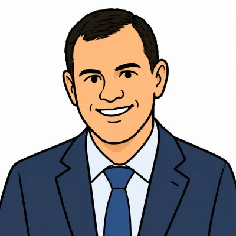
Directeur de projet
Karim, PhD, CISSP et CCSP, est un professionnel senior de la cybersécurité et de la transformation, avec 20 ans d’expérience dans le pilotage de projets complexes de sécurité, de résilience, d’audit et de conformité réglementaire.
Il intervient dans des environnements variés, notamment la banque, les services financiers, les paiements, les marchés de capitaux, l’industrie, le cloud et le secteur public, en accompagnant les organisations dans leurs programmes de transformation et de mise en conformité.
Son parcours combine direction de projets et de programmes, gouvernance cybersécurité, audit, gestion des risques et conformité, avec une expertise particulière autour de DORA, NIS2, PCI DSS, la résilience opérationnelle, la sécurité cloud et les solutions de sécurité intégrant l’intelligence artificielle.
Habitué à travailler à l’interface entre les métiers, la technologie, les risques et la réglementation, Karim transforme les exigences complexes en feuilles de route concrètes et en programmes de transformation opérationnels. Il est également formateur certifié PECB.
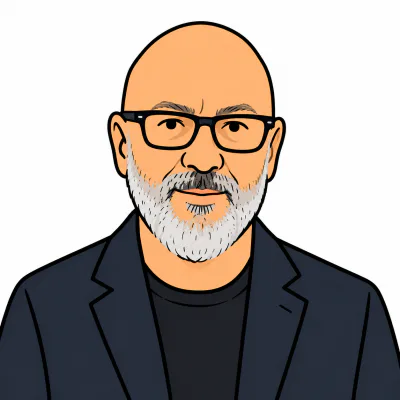
Directeur de projet
Mauro est expert en cybersécurité, intelligence artificielle et cyber-résilience. Spécialiste ISO 27001 et expert auprès de la Commission européenne, il accompagne les organisations dans l’évolution d’une cybersécurité centrée sur la protection vers une véritable stratégie de résilience.
Il explore notamment l’usage de l’IA pour anticiper les menaces, automatiser la détection et la réponse aux incidents, tester la robustesse des défenses et renforcer la capacité des organisations à continuer de fonctionner face aux cyberattaques.
Sa conviction : la question n’est plus seulement “comment éviter l’attaque ?”, mais “comment continuer à fonctionner quand elle survient ?”
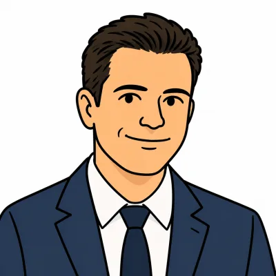
Directeur de projet
Consultant en stratégie et transformation depuis plus de 14 ans, Michael intervient à l’interface de la gouvernance, de la cybersécurité et de la conduite du changement dans des environnements réglementés et multiculturels.
Bilingue anglais-français de naissance et disposant d’une pratique professionnelle de l’espagnol, il a piloté la conception d’une plateforme cloud souveraine pour LCH SA (LSEG) et coordonné un déploiement cybersécurité multilingue auprès de 140 organisations dans 140 pays pour Grant Thornton International.
Titulaire d’un MBA de l’ESSEC, il prépare une relocalisation à Genève afin de mettre ces compétences au service d’organisations à vocation internationale.
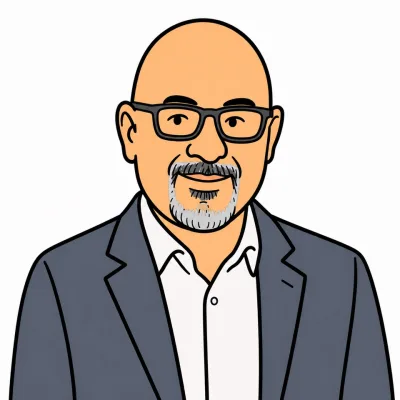
Directeur de projet
Expert senior en résilience opérationnelle, cybersécurité et transformation technologique des institutions financières. DORA Lead Manager, il a piloté durant deux ans la conformité DORA de LCH SA, entité du groupe LSEG et seule chambre de compensation bancaire française supervisée au quotidien.
Senior Lead Auditor & Implementer ISO/IEC 27001, il intervient comme pilier hybride entre les directions Cyber, Tech, Métiers et Procurement. Son expertise couvre également SecNumCloud ainsi que le suivi des audits et revues PASSI liés aux exigences RGS et LPM. Il pilote les trois étapes essentielles d’une démarche EBIOS Risk Manager : analyse des risques, pré-audit et audit nécessaires à l’homologation SecNumCloud.
Senior Lead Trainer, il accompagne les directions et les équipes dans l’appropriation de DORA, de l’AI Act et des référentiels de sécurité. Il maîtrise la communication bancaire et les échanges financiers sécurisés, notamment à travers le protocole EBICS TS. Sa vision transverse lui permet d’identifier rapidement les vulnérabilités, les dépendances critiques et les dérives afin d’anticiper l’orientation des projets.
Il développe aujourd’hui des approches associant intelligence artificielle, cybersécurité quantique et tokenisation afin de préparer les infrastructures financières aux transformations de demain.
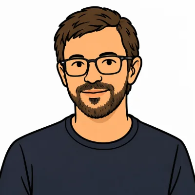
Consultant senior
Aleksander est consultant spécialisé en architecture IA, ingénierie logicielle et formation. Il accompagne les organisations dans l’intégration concrète de l’intelligence artificielle au sein de leurs activités.
Son expertise couvre l’architecture logicielle, la conception de systèmes d’agents IA, l’intégration d’outils, l’automatisation et l’utilisation d’assistants de développement.
Il intervient auprès des dirigeants, des équipes métier et des équipes techniques afin de transformer les besoins opérationnels en solutions adaptées, maîtrisées et évolutives.
Ses formations consacrées à l’IA générative, à l’automatisation et aux agents IA associent explications accessibles, démonstrations et exercices pratiques adaptés au niveau des participants.
Son expérience technique lui permet d’apporter une vision concrète des possibilités, des limites et des conditions de réussite des solutions d’intelligence artificielle.
Son approche privilégie la stabilité, la sécurité, les tests et la supervision humaine afin de garantir des usages fiables et de renforcer l’autonomie des équipes.
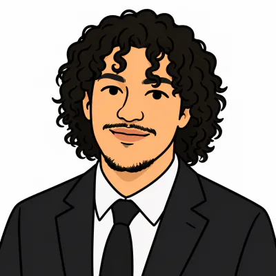
Consultant senior
Anas est ingénieur cybersécurité, spécialisé dans la gestion des risques, la résilience opérationnelle et la sécurité des systèmes d'IA. En risk management, il a piloté des analyses EBIOS RM et la mise en conformité NIS2/RGPD sur des systèmes critiques, en tant qu'architecte sécurité et risk manager. En résilience, il conçoit des dispositifs de gestion de crise, de continuité d'activité et de réponse à incident, une pratique consolidée par son expérience en SOC et en pentest. En IA, il a appliqué son expertise à la création et à la sécurisation de modèles d'intelligence artificielle au service de la gestion des risques, notamment chez IBM, chez WEHI (Australie) et au sein de grands groupes. Il a travaillé dans le secteur biomédical, où il a été le seul ingénieur cybersécurité de la structure, en charge à lui seul de la sécurité de l'ensemble de la plateforme.
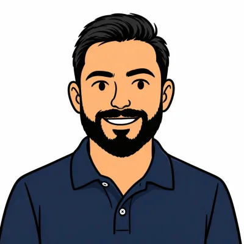
Consultant senior
Expert senior en cybersécurité et Évaluateur Technique reconnu dans le cadre des dispositifs ANSSI, Arnaud est spécialisé en résilience cyber, architecture de sécurité, cyber intelligence et sécurité offensive dans des environnements critiques et sensibles.
Il intervient comme Responsable d’Évaluation et Évaluateur Technique dans les dispositifs PACS, PASSI et PAMS de l’ANSSI, avec une expertise reconnue en évaluation de la sécurité et en conformité.
Ses certifications comprennent notamment CISSP, CEH, ISO 27001 Lead Auditor et DORA Implementer, ainsi qu’une certification en pentest appliqué à l’IA.
Son expertise couvre le Red Team, le pentest, l’analyse des risques, l’OSINT, la Cyber Threat Intelligence et la surveillance du Dark Web et des infostealers.
Il développe également des approches combinant intelligence artificielle, machine learning et cybersécurité, notamment pour la détection de logiciels malveillants.
Son expérience chez Axa, Eviden, Chanel, Airbus et au Ministère des Armées lui permet d’allier expertise technique, exigences réglementaires et vision opérationnelle au service de la résilience cyber.
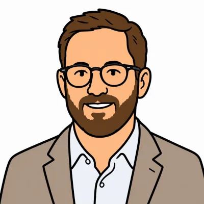
Consultant senior
Aurélien est consultant senior en cyber-résilience, gouvernance IT et gestion des risques liés aux tiers (TPRM). Fort de plus de 20 ans d’expérience dans des environnements internationaux et régulés, il accompagne les organisations sur la maîtrise des risques TIC, la continuité d’activité, la gouvernance des prestataires critiques et les exigences DORA. Ancien DSI LATAM, il combine vision exécutive, expérience opérationnelle de la gestion de crise et pilotage d’écosystèmes fournisseurs complexes.
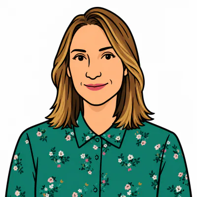
Consultant senior
Céline est juriste spécialisée en protection des données, numérique et santé, avec plus de 15 ans d’expérience en propriété intellectuelle, NTIC, recherche, santé et données personnelles. Depuis 2018, elle accompagne les organisations en qualité de consultante et DPO externe. DPO certifiée AFNOR et Déléguée à l’éthique numérique (DEO), elle intervient sur des environnements complexes et fortement réglementés.
Elle développe une expertise particulière autour de l’intelligence artificielle, de sa gouvernance et de la mise en œuvre opérationnelle de l’AI Act. Son approche vise à faire de la conformité un levier de résilience face aux risques numériques, réglementaires et technologiques. Elle place l’éthique, la responsabilité et la protection des personnes au cœur des projets numériques et d’IA. Convaincue que la résilience passe aussi par l’appropriation des enjeux par les équipes, elle accorde une place importante à la sensibilisation et à la transmission. Ses interventions reposent sur une approche pragmatique, exigeante et centrée sur l’humain.
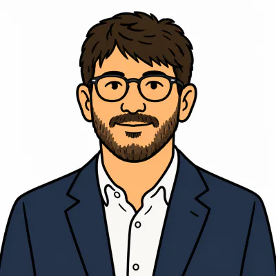
Consultant senior
Clément intervient comme consultant en cybersécurité au sein de l’équipe R’U Safe. Son parcours associe une formation en cybersécurité au CESI et une expérience en systèmes, réseaux et sécurité informatique. Titulaire de la certification eJPT, il s’intéresse particulièrement à la cyber-résilience : sécuriser les infrastructures et renforcer leur capacité à faire face aux incidents. Il pratique également le développement informatique en complément de ses activités en cybersécurité et explore les applications de l’intelligence artificielle et de l’automatisation pour faciliter l’analyse et réduire les tâches répétitives.
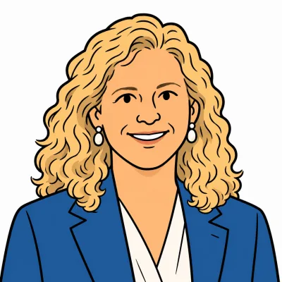
Consultant senior
Corinne est auditrice ISO/IEC 27001, DPO certifiée et docteure en informatique. Enseignante à l’Université Paris 1, notamment au sein du Master IKSEM, elle accompagne depuis plus de 25 ans la transmission des savoirs et la montée en compétence des organisations.
Spécialiste du facteur humain, elle conçoit des dispositifs pédagogiques innovants pour renforcer durablement la culture cybersécurité et la résilience opérationnelle.
Son expertise s’étend également à la gouvernance responsable de l’intelligence artificielle, à la protection des données et à la maîtrise des risques liés aux nouveaux usages numériques. Elle intervient notamment sur la sensibilisation aux risques de l’IA, l’adoption de pratiques responsables et l’appropriation des exigences réglementaires.
Ses outils de diagnostic permettent enfin de mesurer la maturité des collaborateurs ainsi que le retour sur investissement des politiques de sensibilisation Cyber, IA et Résilience.
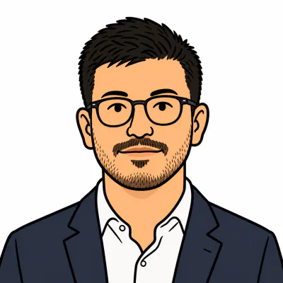
Consultant senior
Expert certifié CISSP et CISA, Edmond met à disposition une solide maîtrise de la gestion des risques informatiques, de la gouvernance et de la résilience opérationnelle (DORA, ISO 27001, NIST). Son parcours lui a permis de concevoir des cadres de contrôle interne performants, de piloter des programmes de continuité d'activité et de mener des audits IT complexes au sein d'environnements exigeants. En complément de cette expertise métier, il explore des solutions innovantes basées sur l'IA (LLM locaux, architectures RAG, agents autonomes) pour automatiser l'analyse de risques et optimiser le traitement de données non structurées. Il apporte sa vision globale et technologique à vos projets.
Consultant senior
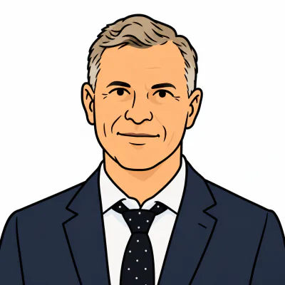
Consultant senior
Eric s’appuie sur plus de 25 années d’expérience dans des fonctions de direction, de conseil, de finance et de management, en France comme à l’international. Son parcours trouve notamment ses racines dans une première expérience opérationnelle particulièrement exigeante, celle d’officier et de pilote de combat. Cet environnement lui a appris très tôt à décider dans des situations complexes, à apprécier les risques, à agir sous contrainte et à assumer pleinement la responsabilité de ses décisions. Il y a également développé une conception du leadership fondée sur la préparation, la rigueur collective, la confiance et la capacité à fédérer autour d’une mission.
Cette culture opérationnelle s’est ensuite enrichie d’une forte dimension internationale, notamment à travers son MBA à HEC et les différentes responsabilités exercées au cours de sa carrière. Son parcours professionnel l’a conduit à évoluer à la croisée du management, du conseil, de la finance d’entreprise et de la stratégie, au contact de dirigeants et d’actionnaires. Il a ainsi accompagné des entreprises dans des phases de développement, de transformation et de décisions structurantes, souvent dans des environnements complexes ou à forts enjeux. Son expérience en corporate finance l’a notamment placé au cœur de problématiques engageant directement la stratégie, le financement, les actionnaires et l’avenir des organisations.
Cette diversité d’expériences lui a permis de développer une vision de la gouvernance qui associe hauteur de vue stratégique et compréhension des réalités opérationnelles. Il considère la gouvernance comme un espace où doivent se conjuguer qualité de la décision, clarté des responsabilités, maîtrise des risques et capacité d’exécution. Son expérience de terrain nourrit également une attention particulière à la résilience des organisations et à leur capacité à faire face à l’incertitude et aux situations de rupture.
Son engagement au sein de l’écosystème de l’IHEDN prolonge cette approche par une réflexion sur les enjeux de stratégie, de souveraineté et de sécurité. Il associe ainsi culture opérationnelle, formation de haut niveau, expérience financière et managériale, ouverture internationale et engagement stratégique. Cette combinaison lui permet d’apporter à une instance de gouvernance un regard à la fois indépendant, pragmatique, stratégique et profondément connecté aux réalités du terrain. Eric met aujourd’hui cette expérience plurielle au service d’une gouvernance exigeante, responsable et capable de transformer la décision en action et en création de valeur.
Consultant senior
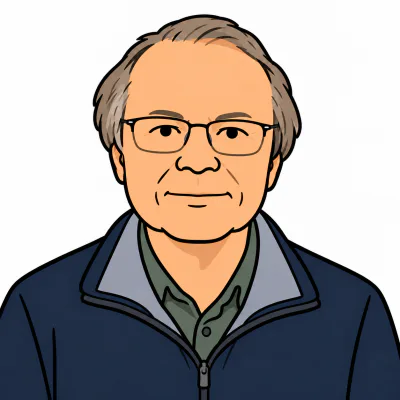
Consultant senior
Consultant expert et formateur en gouvernance des systèmes d'information, François accompagne depuis plus de 30 ans les organisations dans la structuration et l'optimisation de leurs services IT. Les missions réalisées pour de grands groupes (Hewlett-Packard, IBM, Getronics) et au sein des sociétés qu’il a fondées lui ont permis de développer une expertise reconnue dans l'amélioration des processus informatiques, la gestion des data centres et les services d'externalisation.
Consultant senior, il a piloté de nombreux programmes ITSM et de transformation digitale dans des secteurs critiques tels que l'industrie nucléaire, la santé-dépendance et la continuité d'activité. Son expertise couvre également la sécurité informatique, l'hébergement de données sensibles et la gouvernance des infrastructures externalisées.
Certifié DORA, ITIL et Lead Implementer ISO 27001, 20000 et 22301, il intervient sur la mise en place de cadres de gouvernance, de gestion des risques et de continuité d'activité. Il contribue aujourd'hui à des approches programmatiques et indépendantes de conformité DORA, avec un focus sur la gouvernance et l'alignement entre exigences réglementaires et pratiques opérationnelles.
Dans le prolongement de cette démarche, il accompagne les directions générales dans la construction de trajectoires de résilience où l'intelligence artificielle joue un rôle structurant — anticipation des risques systémiques, continuité d'activité renforcée, adaptation dynamique aux exigences DORA. Sa conviction : l'IA n'est pas un chantier technologique isolé, mais un levier de transformation qui redéfinit les cadres mêmes de la gouvernance et de la souveraineté opérationnelle.
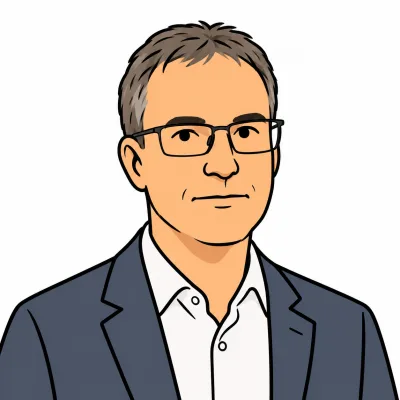
Consultant senior
Gilles est certifié ISO27001 Lead Implementer, ISO27005 Risk Manager et ProCSSI (Professionnel de la Sécurité des Systèmes d’Information). Ses 20 ans d’expérience en tant que RSSI et en mise en place de PRA/PCA en environnement temps réel critique en font un expert en résilience des systèmes d’information.
Gilles accompagne ses clients dans leur projet de mise en conformité et d’amélioration de la maturité de leur SI. Il intervient à l’école d’ingénieur CY-TECH, où il enseigne la sécurité des réseaux aux élèves de dernière année. Il forme aussi les futurs diagnostiqueurs de l’ANSSI et fait partie des groupes de travail « NISv2 » et « Référent cybersécurité » pour le Campus Cyber.
Consultant senior
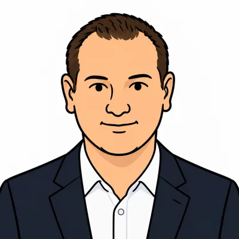
Consultant senior
Kevin est certifié Lead Implementor ISO/IEC 27001 et compte trois ans d’expérience dans ce domaine. Il applique ses connaissances en tant que RSSI au sein des entreprises de son groupe, où ses domaines de compétence portent particulièrement sur la résilience organisationnelle : plan de continuité d’activité, plan de reprise d’activité et charte informatique.
Doté d’une bonne connaissance des systèmes informatiques d’entreprise, il se forme actuellement à l’usage de l’intelligence artificielle en entreprise afin d’accompagner les nouveaux enjeux de sécurité et de transformation numérique.
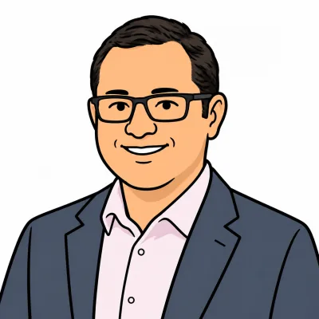
Consultant senior
Luis est consultant senior avec plus de 20 ans d’expérience dans les infrastructures numériques critiques, l’énergie et la gestion des risques. Il pilote actuellement la stratégie énergétique d’un portefeuille de 35 data centers répartis dans plus de 25 marchés internationaux, au service d’environnements d’IA, de cloud et de calcul haute densité.
Son expertise couvre la disponibilité énergétique, la capacité des réseaux électriques, la résilience des data centers, ainsi que la protection et la continuité opérationnelle des infrastructures critiques de télécommunications sous-marines.
Consultant senior
Expert en stratégie internationale, résilience et transformation des organisations, avec plus de 20 ans d’expérience dans les secteurs automobile, mécanique et technologique. Solide expérience du développement de marchés, du pilotage de filiales et de projets OEM, des appels d’offres internationaux et du management d’équipes multiculturelles dans des environnements complexes et en mutation.
Capacité éprouvée à anticiper les ruptures, adapter les modèles opérationnels et commerciaux et transformer les contraintes en opportunités de croissance, notamment dans des contextes internationaux exigeants en EMEA, Asie et Afrique. Fortement orienté résultats et innovation, avec un intérêt particulier pour l’intégration de l’intelligence artificielle dans la stratégie, la prise de décision et le développement commercial, afin de renforcer l’agilité, la résilience et la performance durable des organisations.
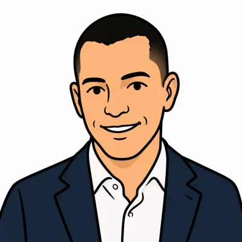
Consultant senior
Mickael dispose de treize ans d’expérience dans les domaines de la gestion des risques IT, de la cybersécurité et de la conformité réglementaire, acquise au sein de cabinets de conseil de premier plan (Deloitte, PwC, Accenture, Onepoint), puis auprès de LSEG (London Stock Exchange Group). Il accompagne principalement des acteurs du secteur financier dans le renforcement de leur dispositif de gestion des risques, de cybersécurité et de résilience opérationnelle, ainsi que dans leur mise en conformité avec les principaux cadres réglementaires (DORA, RGPD, SOX, Regulation SCI) et référentiels de référence (NIST, ISO/IEC 27001, COBIT, ISAE 3402). Il intervient notamment sur des sujets de gouvernance des risques, de gestion des risques IT et cyber, de résilience opérationnelle et d’optimisation des processus. Il est certifié ISO/IEC 27001 Senior Lead Implementer et prépare actuellement les certifications PECB DORA Lead Manager, PECB Certified Trainer et ISO/IEC 42001 dédiée aux systèmes de management de l’intelligence artificielle.
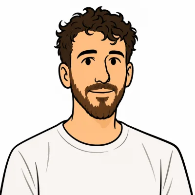
Consultant senior
Nicolas est consultant spécialisé en architecture IA, conseil et formation. Il accompagne les organisations dans la compréhension, l’adoption et l’intégration de l’intelligence artificielle.
Son expertise couvre l’identification des cas d’usage, l’évolution des processus, la conception d’assistants IA et d’automatisations, ainsi que le développement de plateformes métier.
Il intervient depuis le cadrage des besoins jusqu’à la mise en œuvre opérationnelle, en tenant compte des objectifs, des contraintes et des usages propres à chaque organisation.
Ses formations destinées aux dirigeants et aux équipes reposent sur des situations concrètes, des expérimentations guidées et les enseignements tirés de projets opérationnels.
Son approche associe vision métier, pédagogie et réalisation technique, avec une attention particulière portée à la maîtrise des données, à la fiabilité des solutions et au maintien du contrôle humain.
Il contribue ainsi à une adoption durable, sécurisée et responsable de l’intelligence artificielle.
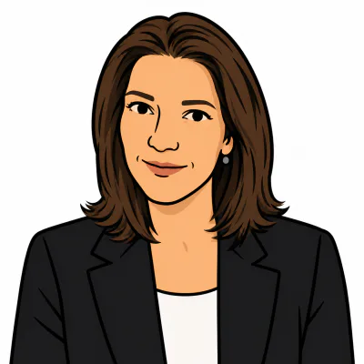
Consultant senior
Forte de quinze ans d'expérience en compliance et risk management, Pénélope est une experte de la résilience opérationnelle numérique. Consultante et formatrice, elle accompagne la mise en conformité des organisations face aux défis technologiques (cybersécurité, DORA, IA Act) et sécurise la gouvernance des données contextuelles. Maîtrisant l'évaluation des profils sensibles (personnalités politiques, ONG, ...), elle agit également comme prospectiviste de l'IA (NLP) et les ressources humaines. Alliant acuité technologique, linguistique et éthique, elle intègre l'inclusion, la gouvernance sémantique et les humanités pour préserver l'humain au cœur de la transformation digitale.
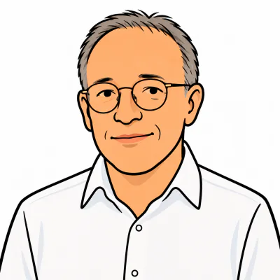
Consultant senior
Pascal est PDG d’entreprises de conseils, consultant et conférencier.
Pour lui, l’Homme et l’organisation sont deux vecteurs de performances qu'il s'agit d'optimiser conjointement. Depuis plus de 25 ans, il accompagne les hommes et les femmes de ses clients qui lui font confiance. Il s’est spécialisé dans le management d’équipe et des organisations, avec des spécialisations comme les Risques Psycho-Sociaux. Chaque Homme est unique et son objectif est de révéler les talents.
Ses talents : le leadership et le management des hommes. Il apporte une approche compréhensive qui consiste à fonder la réflexion sur les acteurs et le sens qu’ils donnent à leurs actions. Sa réflexion consiste à élargir avec pragmatisme le champ des possibles et à révéler les clefs d’une plus grande performance.
Passionné par le secteur du monde automobile, il met en œuvre ses compétences dans un univers où l’anticipation et la gestion du stress sont un quotidien. Sa résilience l’aide à transformer les difficultés en leviers de progression.
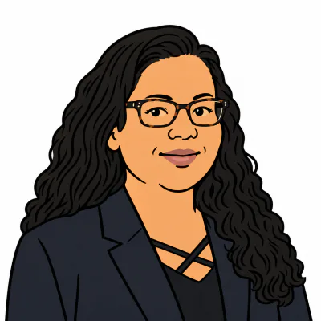
Consultant senior
Prasanthi est Senior Risk & Data Manager et Product Manager, avec plus de 20 ans d’expérience au sein d’institutions financières internationales. Elle accompagne les organisations dans leurs projets de transformation, de gestion des risques et de résilience opérationnelle, à l’intersection des enjeux métier, réglementaires, data et technologiques. Chez LCH SA, elle a notamment contribué pendant 18 mois à la mise en conformité DORA et au renforcement du dispositif de Third Party Risk Management, avec un focus sur les prestataires ICT, les tiers critiques et les stratégies de sortie. Son expertise en Data Management, automatisation et transformation digitale lui permet aujourd’hui d’aborder les enjeux liés à l’IA sous l’angle de la maîtrise des risques, de la gouvernance et de la résilience des organisations.
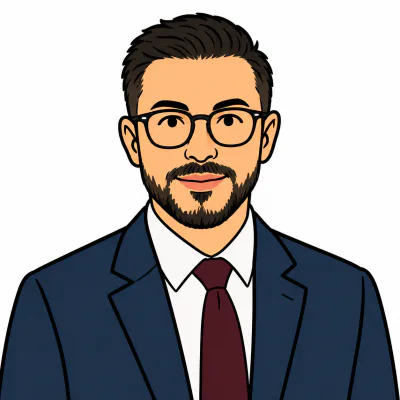
Consultant senior
Samy est consultant senior en Gouvernance, Risques & Conformité (GRC), certifié CISA et ITIL, expert des réglementations européennes DORA, NIS2 et DSP2. Il accompagne les organisations financières, fintechs et ETI dans la mise en conformité réglementaire, la maîtrise des risques IT et la résilience opérationnelle, en apportant des solutions simples, efficaces et immédiatement opérationnelles.
Il intervient sur des missions à fort impact : cartographie des risques, analyse de maturité DORA/NIS2, audit IT, revue de prestataires essentiels, gestion des incidents majeurs, et pilotage de programmes de transformation numérique & IT. Son expertise couvre également les risques liés à l’Intelligence Artificielle, un enjeu croissant pour les organisations souhaitant sécuriser leurs usages IA.
Samy se distingue par une approche pragmatique, orientée résultats, permettant de transformer des exigences réglementaires complexes en processus robustes, audit-ready et adaptés au terrain. Il apporte une vision transverse mêlant IT, sécurité, conformité, risques et gouvernance, essentielle pour accélérer et sécuriser les projets de transformation réglementaire.
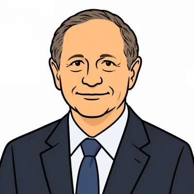
Consultant senior
Serge a 48 ans d’expérience en gestion de projets et d’équipes sécurité. Il est notamment le créateur de l’Institut de Recherche Criminelle de la Gendarmerie Nationale (IRCGN). Certifié PECB ISO 27001, PECB DPO et Bureau Veritas DPO, il se consacre plus particulièrement depuis 9 ans, comme consultant ou formateur, aux sujets de sécurité des systèmes d’information (RSSI), d’analyses de risques, de protection des données personnelles (RGPD) et de résilience (exercices de crise).
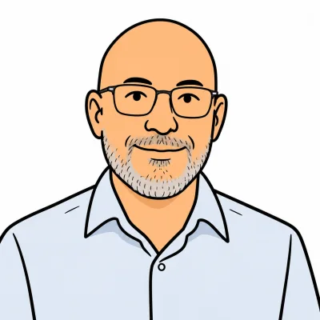
Consultant senior
Stéphane dispose de 30 ans d’expérience, notamment dans l’industrie automobile à travers 12 pays européens, l’intégration de lignes de production, la valorisation des activités d’un campus universitaire et le conseil en performance industrielle au sein de Deloitte/In Extenso.
PDG de FSURCONSEIL SARL depuis 2022, il développe depuis 2015 des méthodes multi-métiers couvrant les ressources humaines, le Lean, la stratégie, la RSE, le financement, le juridique ainsi que le digital, l’IA et la cybersécurité.
Son approche vise à transformer les interventions de performance industrielle en coordonnant, en parallèle, les expertises spécialisées. Depuis 2015, plus de 300 missions ont été menées dans ce cadre.
Certifié notamment Master Black Belt, Lean Six Sigma, ISO 9001, ISO 14001 et ISO 50001, Stéphane apporte une expertise de pilotage de projet et de performance industrielle aux organisations.
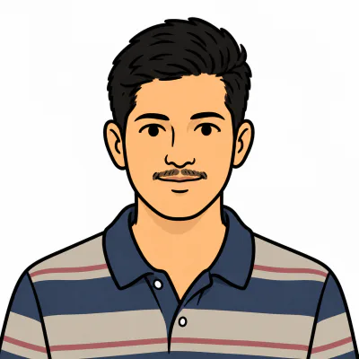
Consultant senior
Venkata est analyste en cybersécurité et gouvernance, risque et conformité (GRC), avec une expérience concrète en gestion des risques informatiques, en conformité réglementaire et en gouvernance des accès au sein de plus de 50 systèmes d’entreprise. Il maîtrise la gestion des accès privilégiés (PAM) et la gouvernance des incidents, et sait traduire les exigences réglementaires telles que ISO 27001, SOX, NIST, GDPR et DORA en contrôles opérationnels efficaces. Sa bonne maîtrise d’outils tels que Splunk SIEM, ServiceNow ITSM et Power BI lui permet de créer des tableaux de bord de suivi des risques et d’appuyer la préparation des audits dans des environnements réglementés.
Consultant senior
Échangeons sur vos enjeux, vos priorités et les résultats attendus.